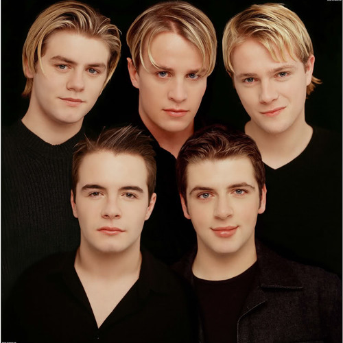

List,Image, Video, and Audio
I Lay My Love on You
Song by Westlife

I Lay My Love on You
By Westlife
I Just a smile And the rain is gone Can hardly believe it (yeah) There's an angel standing next to me Reaching for my heart II Just a smile And there's no way back Can hardly believe it (yeah) But there's an angel And she's calling me Reaching for my heart Refrain: I know, that I'll be OK now This time it's real Chorus: I lay my love on you It's all I want to do Every time I breathe I feel brand new You open up my heart Show me all your love, And walk right through As I lay my love on you III: I was lost in a lonely place Could hardly believe it (yeah) Holding on to yesterdays Far, far too long Refrain: Now I believe it's okay cause This time it's real Chorus: I lay my love on you It's all I want to do Every time I breathe I feel brand new You open up my heart Show me all your love, And walk right through As I lay my love on you Brige: I never knew That love could feel so good [Instrumental] Like a once in a lifetime You change my world Chorus: I lay my love on you (you) You make me feel brand new Show me your love, And walk right through (oh yeah) As I lay my love on you I lay my love on you It's all I want to do Every time I breathe I feel brand new You open up my heart Show me all your love, And walk right through As I lay my love (I lay my love) on you I lay my love on you You make me feel brand new You open up my heart Show me all your love, And walk right through As I lay my love on you As I lay my love on you.
The song "I Lay My Love on You" was written by
Jorgen Elofsson, Per Magnusson, and David Kreuger.The
song was performed by the Irish boy band Westlife
and released in 2000.
Songwriters:
Jorgen Elofsson, Per Magnusson, and David Kreuger
Performer:
Westlife
Year:
2000
Referrence:
https://www.azlyrics.com/lyrics/westlife/ilaymyloveonyou.html